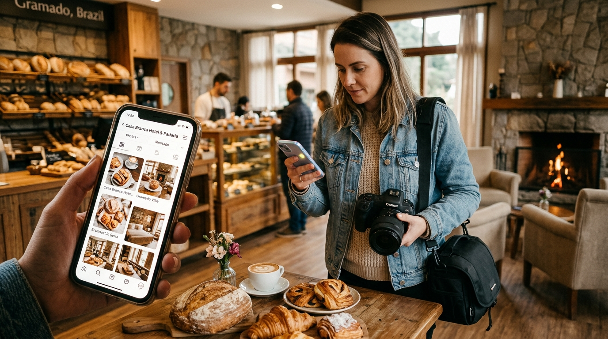

Tráfego Pago em Gramado e Canela: Como Otimizar Anúncios no Meta Ads e Google Ads
Guia prático para hotéis, gastronomia e negócios da Serra Gaúcha atraírem clientes qualificados com anúncios geolocalizados.
Guias e artigos sobre tráfego pago, redes sociais e branding voltados para impulsionar negócios locais e turísticos em Gramado, Canela e região.
Guia prático para hotéis, gastronomia e negócios da Serra Gaúcha atraírem clientes qualificados com anúncios geolocalizados.

Aprenda a construir uma linha editorial no Instagram que atrai a atenção de moradores e turistas, aumentando suas reservas e vendas.
Descubra como construir uma identidade de marca forte para cobrar preços de alto valor e dominar o mercado na Serra Gaúcha.
Converse com a equipe local da Phoenix Rise e receba um diagnóstico completo de tráfego, redes sociais e marca para a Serra Gaúcha.